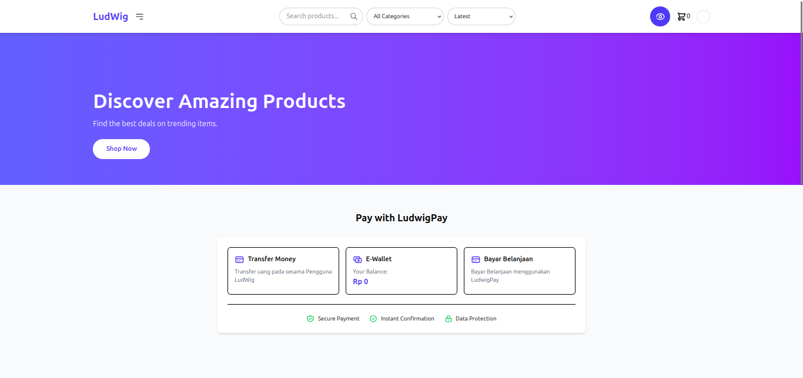
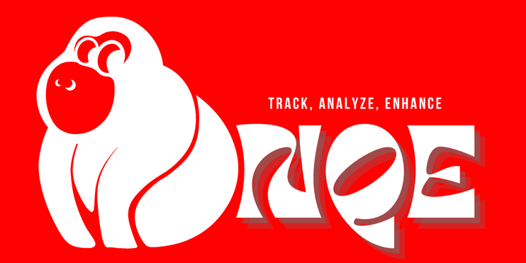
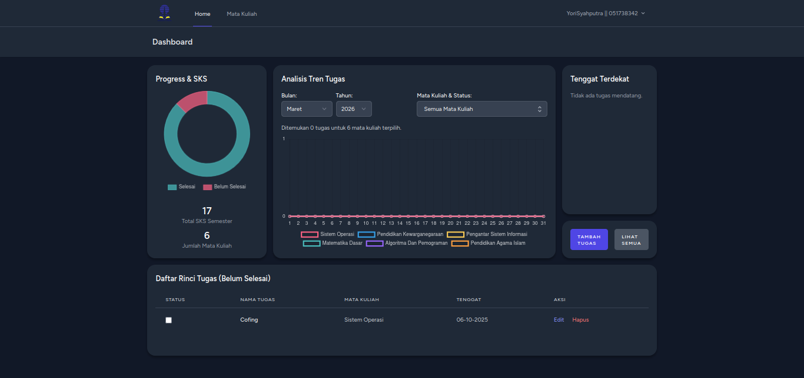

Membangun Sistem
Web & Mengoptimalkan
Performa Perangkat Keras.
Halo, saya Yori. Mahasiswa Universitas Terbuka yang berfokus pada pengembangan Back-End dan antusias terhadap dunia Game QA. Saya senang mengubah logika kompleks menjadi solusi digital yang stabil dan efisien.
Analisis Performa Game & Porting: Sebagai penggemar berat seri Borderlands, saya memiliki pengalaman langsung membandingkan kualitas game hasil porting antara platform PS4 dan Nintendo Switch. Saya memahami pentingnya optimasi aset agar game tetap berjalan lancar (stabil FPS) di perangkat dengan spesifikasi terbatas.
KARYA TERPILIH (2025-2026)
Ludwig Commerce
Platform e-commerce berbasis Laravel dengan manajemen inventaris stok real-time dan struktur database yang kompleks.

Keahlian Utama
Teknologi yang saya gunakan.
Monqe.site
Implementasi web service untuk kebutuhan industri yang dikembangkan selama masa magang di Telkom Indonesia.

UTReminder
Proyek personal untuk membantu manajemen jadwal perkuliahan dan tugas mahasiswa Universitas Terbuka.

Segera Hadir...
Sedang dalam proses pengembangan. Tunggu tanggal mainnya!
Optimasi Lintas Platform.
Memahami batasan hardware adalah kunci. Saya memiliki pengalaman menganalisis performa game di berbagai lingkungan, mulai dari konsol (PS4 & Switch) hingga sistem Linux, untuk memastikan stabilitas dan kualitas pengalaman pemain.